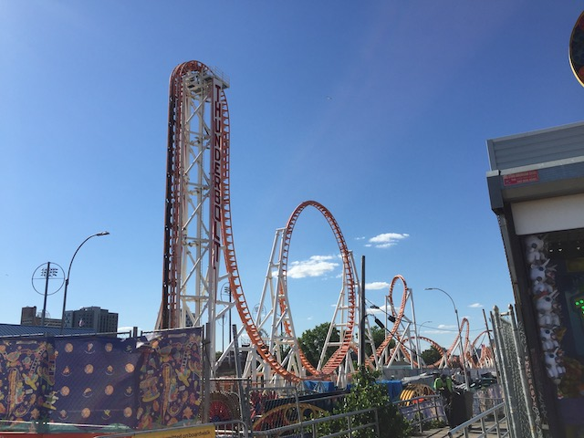

| |
Thunderbolt Review

We're here at Coney Island. Today's ride we'll be reviewing for you is Thunderbolt. Now this ride is made in honor of a former coaster at Coney Island, also called Thunderbolt. However, these two rides have NOTHING in common. The original Thunderbolt was an old wooden coaster that operated from 1925 to 1982, and then sat SBNO until 2000. This coaster has been gone for longer than I've been a coaster enthusiast. So naturally, I never got a chance to ride this. But the ride.....seemed decent. A simple basic Out'N'Back wooden coaster. This is the EXACT opposite of that, which is basically....a sort of knock-off Eurofighter. And I can say this. This ride is F*CKING AWFUL!!! One of the worst coasters I've ridden. I'm sorry people who like it, but....I stand by everything I said. Why is this ride so bad? Let's ride and find out. We get into the cars, and pull down the restraints. And.....here's one of the biggest problems with the ride. The restraints. Seriously, this ride has some of the worst restraints ever, only being beaten out by the Togo neckhopper restraints that used to be on Manhattan Express, and are now only on Mega Coaster (luckily, that ride is really fun, and due to it being super smooth, the terrible restraints aren't a problem). So these restraints are essentially a giant clamshell lap bar that.....really doesn't fit. Seriously. This thing f*cking pinches you and.....just feels like a giant weight on your lap. And on top of that, it has these....seatbelts that sort of act like an OTSR. Except....it both pins you and doesn't at the same time. It doesn't prevent you from flopping like a rag doll, but it also tries to pull on you to stop. So thanks to the both too loose and too tight at the same time seatbelts, you get both the downside of being thrown around like a rag doll, and the downside of having a seatbelt clash against your body. And.....with the nature of this ride, *laughs* there's A LOT of that on this ride. So yeah. The ride hasn't even started and I already hate it. This is NOT a good sign. But too late. The ride is now starting. We go around a turn, and begin climbing up the vertical lifthill. Now, I've always been a fan of these. Just wish that Zamperla didn't make all the seats out of plastic, so that it'd be a bit more comfortable to lean into them. Also, this REALLY makes the ride feel like a Eurofighter. But unfortunately, even the worst Eurofighter is LIGHTYEARS better than this peice of shit. We eventually reach the top and head down the first drop. Now is just a vertical drop, not beyond vertical. So this is NOT a Eurofighter. Plus, this ride is inferior to every Eurofighter ever made. The drop isn't too bad. It gives us some decent speed. Yeah. The ride is rattling a bit, but so far, it's tolerable. We then head into the vertical loop. Somehow, the loop is rough. This ride, and the now defunct Dragon from Adventureland (Good riddance to that peice of sh*t) seem to be the ONLY rides that can have rough loops. And because of the seatbelts, it has some roughness. But that's nothing compared to what's coming up. Cause now we're gonna go through the part of the ride that has laterals. Yeah, up next is the Zero G Roll. Now, I am normally a huge fan of these heartline spins. However.....this ride just seemed to butcher the design. That, or just the horrible nature of the restraints really screws you. Because when it has the whip, it both throws you around, while still getting yanked back to the seat by the uncomfortable seatbelts. And it's still downhill from here. We then go through an overbanked turn, which....SLAM!!! JENK!!! Oh boy. This ride does NOT take laterals well AT ALL!!! And of course, all while this is going on, the crab lap bar is pinching your sides. So....this is not a fun experience. And....*sigh*, then comes the Dive Loop. This part is without a doubt, the worst part of the ride. Because....oh boy. This is not like the Dive Loops you experience on a B&M. This is a poorly made, awkard, JENKY experience that just shakes, rattles, and tosses you around as it eventually flips you upsidesdown, before dumping you on the ground. After this part, it tries to aleviate the discomfort and makes up for it with airtime hills. They're not super strong. Fairly weak, but at least there's no laterals here. One hill. Two hills. And SURPRISE!!! Bonus corkscrew! GOD DAMN IT!!! It's a this part of the ride that you really feel like a test dummy in a car crash simulator. Seriously, this simulates a car crash FAR more than Test Track does. I don't even feel like I'm going upsidedown. All I feel is the limits of these seatbelts in how much they can tolerate. Though let's keep it real. This would be just as bad if it had standard OTSRs since.....this ride is NOT well designed (Sorry Zamperla). Even if it had regular lap bars that didn't pinch you, it'd still suck. OK, it wouldn't be as bad. But still. Go through another airtime hill. And because Zamperla thinks that they can do laterals, they bank it slightly, which only jolts us even more. Ugh. And then we hop up into the brake run. Oh thank god. It's over. So yeah. This ride SUCKS!!!! And I hate it. One thing worth noting is that apparently people seem to like the clones of this ride that it produced. First off, the fact that this ride got cloned is f*cking depressing. But regardless, people say that it's only Thunderbolt, and that the clones are actually decent. I'm skeptical of this since.....the restraints are horrible, and I don't think Zamperla changed that before cloning it. Who knows. Maybe Zamperla fixed the track and layout so it goes through the elements smoothly, and you just ignore the horrible restraints like you do on Mega Coaster. I highly doubt that and expect to hate the clones since.....why should the clone of a piece of sh*t be any good? But even if that was the case, there's no reason to ride THIS ride. Avoid it at all costs when you visit Coney Island.
1/10
Location: Coney Island
Opened: 2014
Built by: Zamperla
Last Ridden: June 16, 2021
Thunderbolt Photos


Home
|